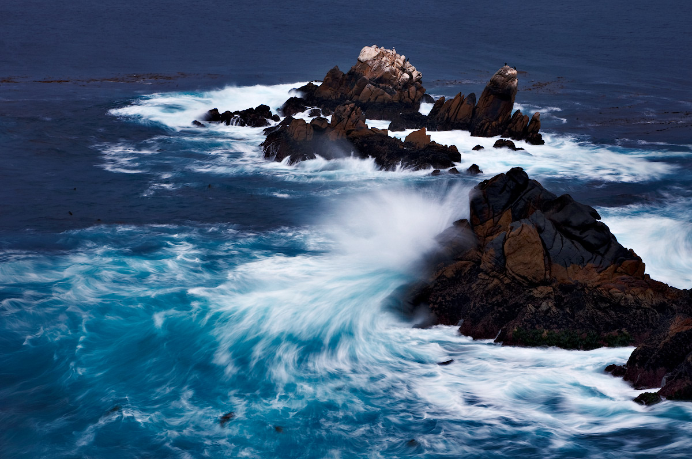

Ivan Dementievsky

At first, I only filmed landscapes. Bypassing the large crowds. Travelled in deserted places. But over time, my view has changed dramatically. There was a big project for Armenia, and there I started to shoot people. It was not easy. We had to overcome a number of complexes. With people working hard, but interesting.
Recently, I still rarely take off on a slide. For several reasons. But it is not going to get rid of the medium format equipment. I think that it is more work. And so, I basically work Nikon D3 and Nikon D700 - this technique gives me a Nikon representative in Russia, because we have a joint project. From filters I most needed: this protective filters gradientniki varying degrees of shading and a polarizing filter. Well, a tripod, of course. More than anything, I do not use.